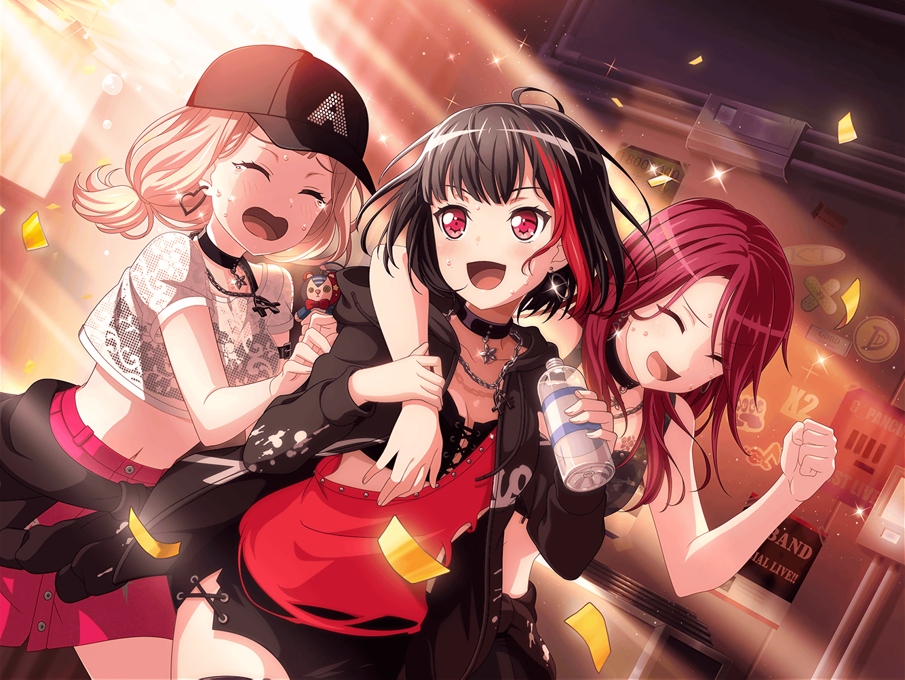

羽丘女子学園 廊下
巴
おー、いたいた！ おーい、蘭！
蘭
ん？ ……あぁ。みんな、どうしたの？
ひまり
今日、みんなバイトも部活もない日だから
一緒に帰ろうと思って！
蘭
うん。いいよ
巴
そうだ、蘭。
この間の差し入れのお礼、蘭のお父さんにしておいてくれるか？
蘭
あれは、父さんが勝手にもってきてるだけだし。
いいよ、そういうの
つぐみ
蘭ちゃんのお父さんの差し入れのおかげで、いい演奏できてるし、
今度うちのお店でサービスするって伝えておいてほしいな
モカ
そういえばさ〜、蘭パパが差し入れにパンかドーナツ、
どっちを持ってくるかみんなで賭けてたけど、
蘭はどっちだっけ？
蘭
てか、またその話？
モカ
いやさあ、あたしはドーナツでひーちゃんはパンだって
予想してたんだけど〜……
ひまり
蘭のお父さんがこの間持ってきてくれたの、ベーグルだったの！
蘭
へー。新しいパターンだね
巴
それで、ベーグルはパンなのかドーナツなのかって
２人がずっと話しててさ……
蘭
うわ……マジでどっちでもいい……
つぐみ
食感はパンっぽいけど、見た目はドーナツっぽいもんね……
私も、どっちかなんて考えたことなかったなあ
モカ
蘭、これは大事なことだよ～？
蘭もちゃんと考えてほしいなぁ～
ひまり
昨日、色々調べてみたんだけど、
ネットにはベーグルはパンの一種だって書いてあったよ
巴
まあ、確かにそんな感じはするよな。
……そうだ！ なんなら沙綾に聞いてみるか？
モカ
え〜、それじゃすぐに答えがわかっちゃうじゃん〜。
ちゃんと、あたし達で考えて答えを出さなくちゃ
モカ
ていうか、見た目はどう見てもドーナツじゃん。
これはもうドーナツでしかないよ
つぐみ
けど、穴のあいてないドーナツもあったりするよね？
巴
確かにあるな。油で揚げてあるのがドーナツなのか？
ひまり
……ってことは、やっぱりベーグルはパンだよ！
ベーグルって油で揚げてないもん！
モカ
も〜、ひーちゃんわかってないなー。
調理方法とかじゃなくてさー、パッと見はどう見たって
ドーナツに近いじゃん？ そういうことなんだってー
ひまり
ど、どういうこと！？
も〜、モカずるいよ〜！
巴
……この話って、どうなったら決着なんだ？
つぐみ
さ、さあ……
蘭
……マジでどうでもいい……
ひまり
こうなったら多数決しかない！
ベーグルがパンだと思う人〜？ 挙手〜！
巴
うーん……アタシはパン派かな……
つぐみ
わ、私も……
モカ
あたしはドーナツに両手で二票入れる〜。
これで同点〜
蘭
いや、それ一票だし……
もう、どっちでもよくない？
モカ
え〜。蘭の一票で決まるんだよ〜
蘭
じゃあ……その父さんが持ってきたベーグルに
チョコとか、甘い具がのってたらドーナツ。
しょっぱい具がのってたらパン。……ってことでどう？
モカ・ひまり
あ〜……それは……
蘭
え？ 何？
ひまり
差し入れのベーグル、プレーンだったんだ……
巴
あ……あ〜……
つぐみ
まさかの、プレーン……
蘭
プレーンって……はは……っ。
父さん、ホントセンスないね。やっぱり、もう差し入れ
やめてって言っとこうかな
モカ・ひまり
そ、それは……！
蘭
じゃあ、もうちょっと気の利いたものもってこいって
言っておくよ。ホント、しょうがないな……